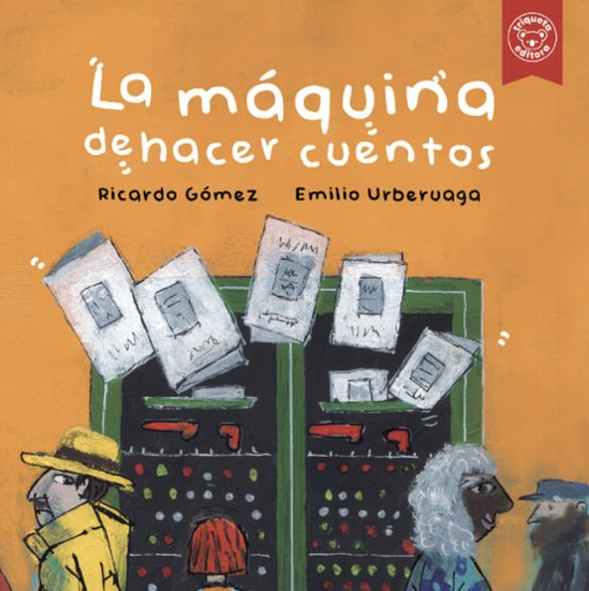
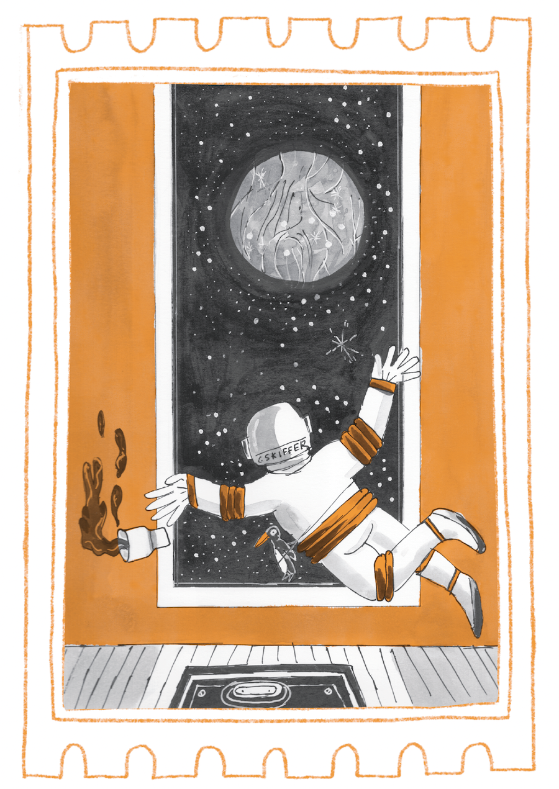
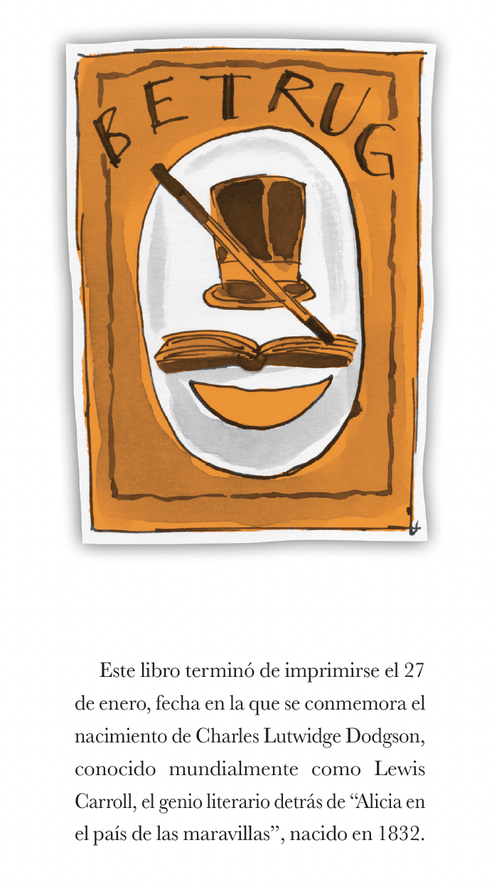
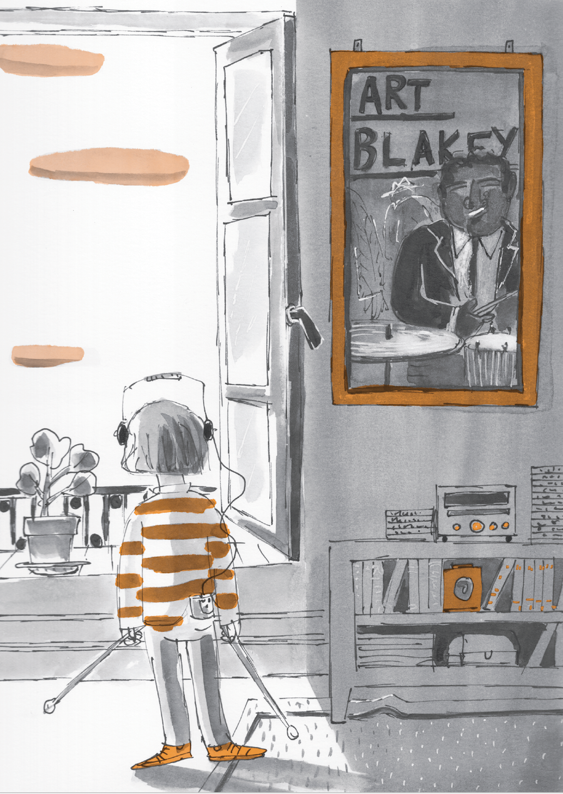
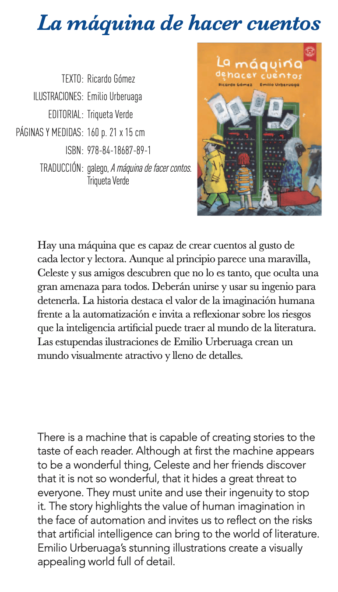
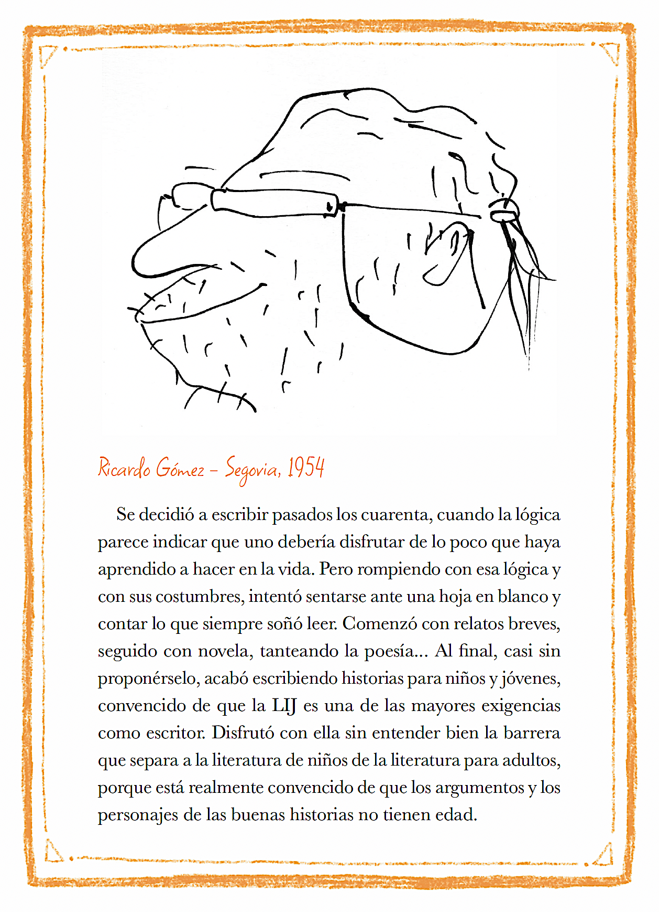
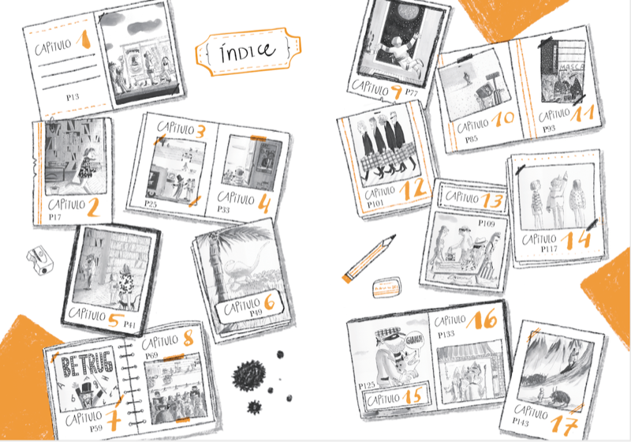
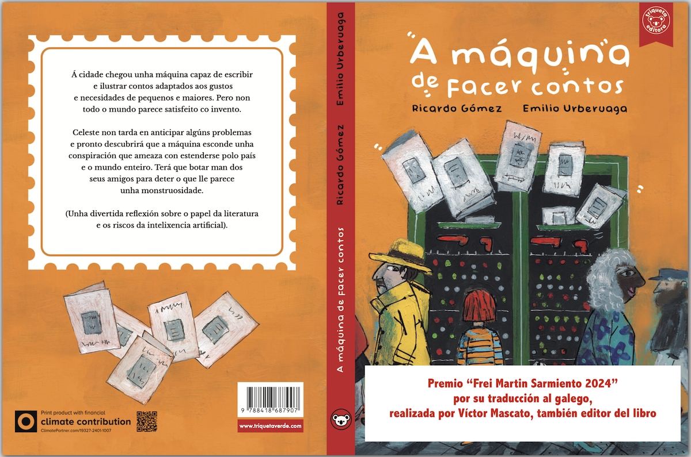

Pocas veces se tiene la suerte de trabajar con un ilustrador como Emilio Urberuaga y un editor (Víctor Mascato), empeñado en hacer las cosas bien, dando como resultado un libro cuidado en sus más pequeños detalles: la cubierta, las guardas, el índice, el color representativo, el papel... Quise imaginar en el libro la llegada de algo parecido a la Inteligencia Artificial al mundo de la literatura, con la que todo el mundo está entusiasmado. Todos, menos una chica, Celeste, que anticipa los problemas en una historia que se convierte en un juego detectivesco, con la desaparición del profesor Betrug y la salida a escena de misteriosos personajes, que forman parte de una confabulación mundial.
¡Has abierto el baúl secreto! 
*
La Máquina de Hacer Cuentos







